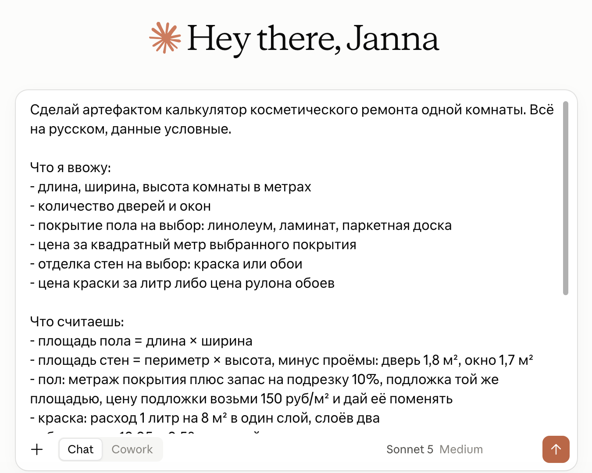
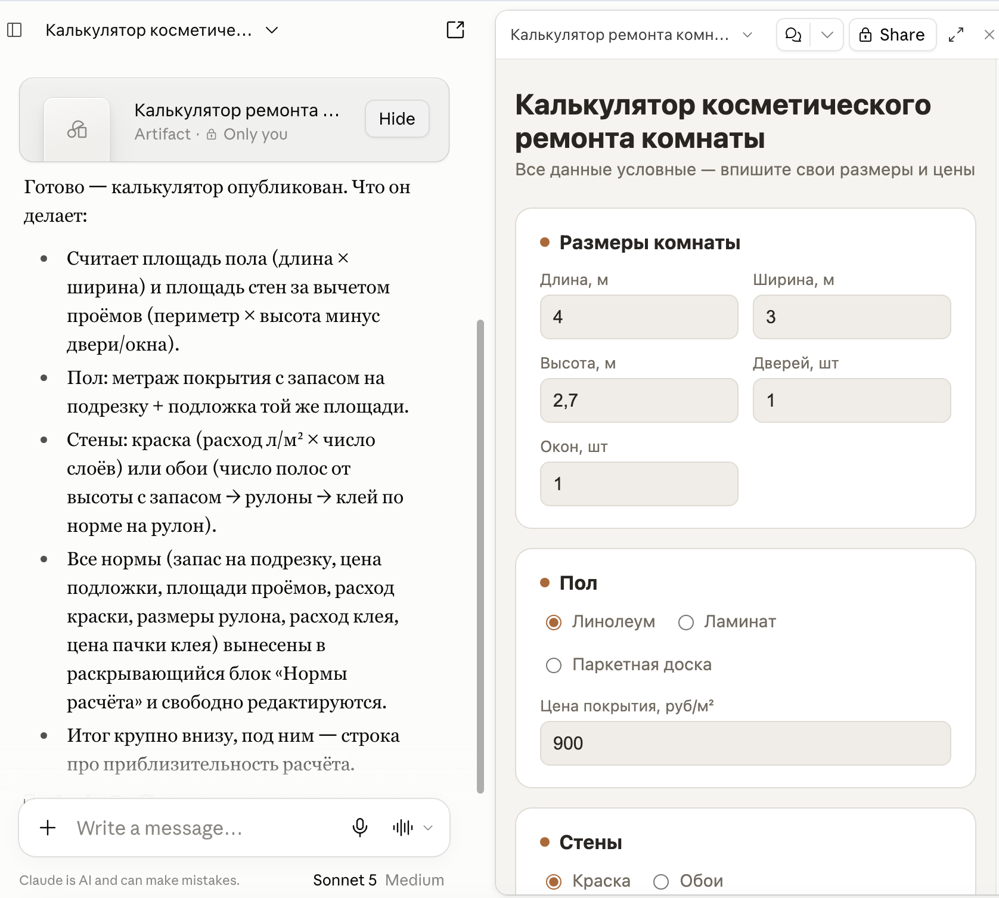
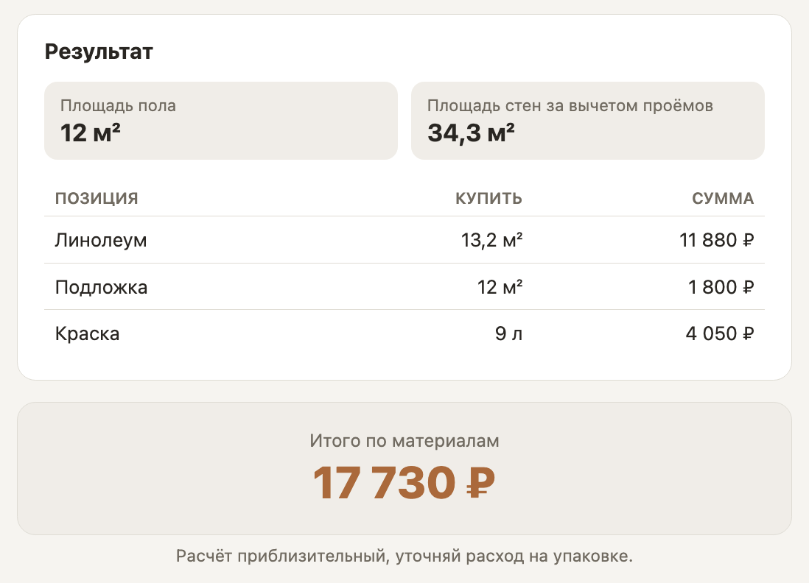
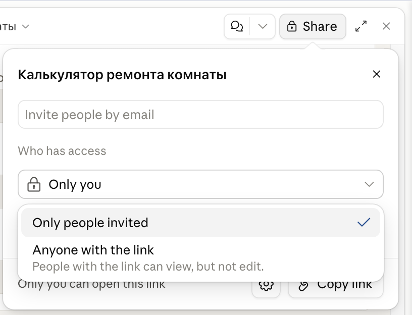
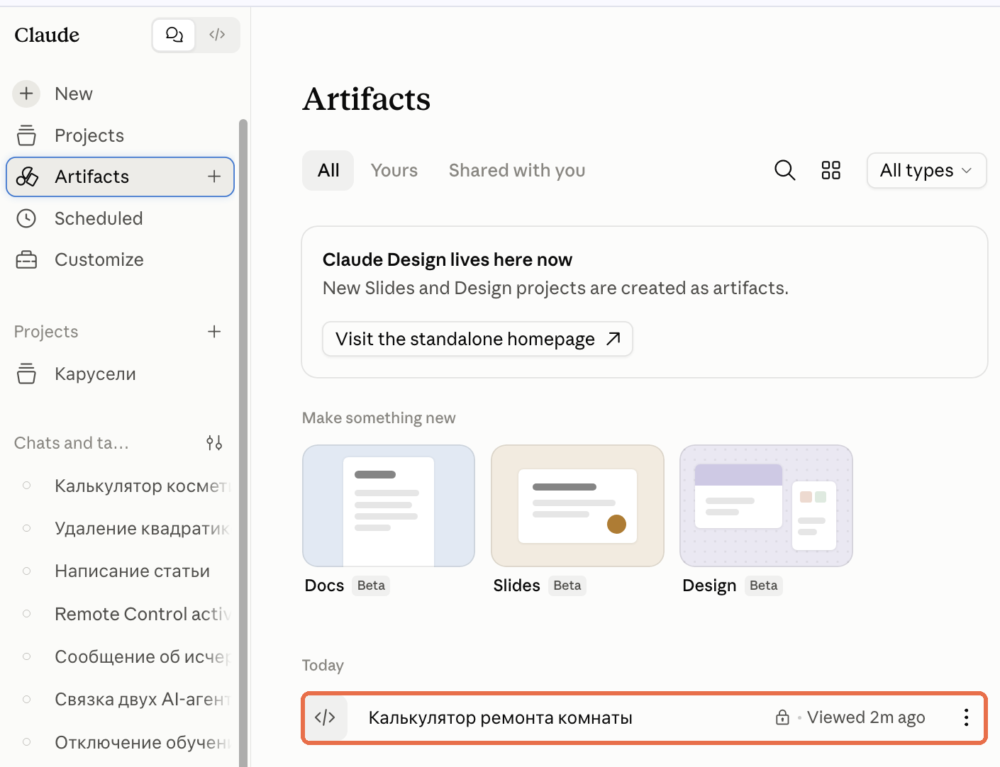
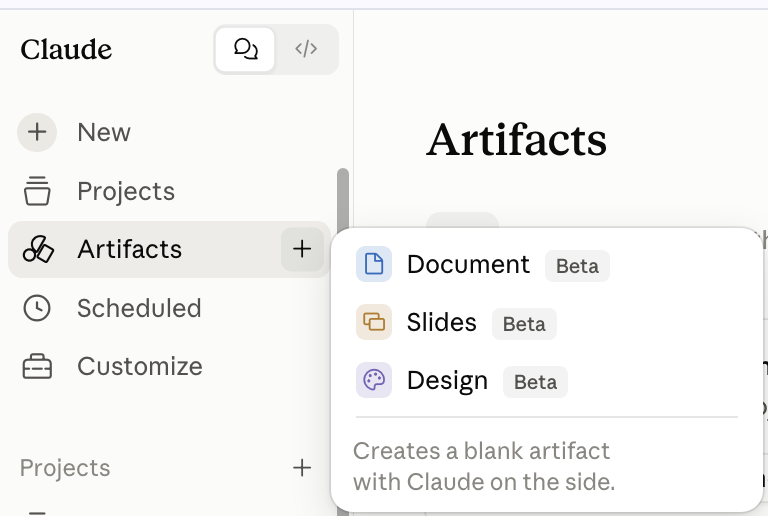

Claude.ai · Артефакты
Артефакты: ответ Клода в отдельном окне, а не в переписке
Все разговоры с Клодом лежат в общем списке чатов. Месяц назад ты считал смету на ремонт: прикидывал по обоям, получил сумму, закрыл чат. За месяц ты передумал: обои разонравились ещё до покупки, теперь стены будут крашеные. Расчёт нужен тот же, меняется в нём один пункт. Но чтобы поменять этот пункт, надо найти тот чат среди десятков, вспомнить свои же условия, дописать новые и ждать, пока Клод посчитает всё заново
То же самое с планом питания: его составляли под прежний вес, вес с тех пор изменился, и весь план надо пересчитывать - хотя меняется в нём одна цифра
Клода можно попросить сразу дать не ответ в чате, а создать «артефакт». Это рабочий документ: он сохранится в разделе Артефакты, и ты сможешь открыть его оттуда, когда угодно. Внутри переключаешь обои на краску, вписываешь цену - сумма меняется сама. Вписываешь сегодняшний вес - меняется расчёт. Чат для этого открывать не надо, цифры правишь прямо в документе
Короткий маршрут
Написать в чате «сделай это артефактом» → ответ откроется окном справа → работать прямо в окне → кнопка Share и доступ Anyone with the link, если отдаёшь другому
Если ты ещё не вошёл в Claude, сначала пройди «Claude из России: подключение без блокировок». Там доступ и первый чат, а сюда вернёшься за артефактами
Что именно ты получаешь
Ответ в чате и рабочий документ - это разное
Ответ в чате можно только перечитать. Даже если Клод посчитал идеально, цифры внутри мёртвые: поменялась одна вводная - и надо возвращаться к нему, объяснять, что изменилось, и ждать новый ответ. Каждый такой заход тратит лимиты и рождает ещё одно сообщение в ленте
Артефакт открывается отдельной панелью и живёт в своём разделе. Но работает иначе он по другой причине: внутри у него бывают поля и кнопки. Тогда пересчёт делаешь ты - переключаешь обои на краску, вписываешь цену, сумма меняется сразу и на твоём же устройстве. Клод в этот момент не участвует
Оговорка, которая экономит время
Само собой пересчитывается только то, что сделано как калькулятор - с полями для ввода. Если попросить просто «план питания», придёт красивый текст, и менять его всё равно придётся через Клода. Поэтому в просьбе так и пишут: «сделай артефактом калькулятор, где я ввожу вес, а он показывает норму». Одна фраза в запросе решает, получишь ты текст или рабочий инструмент
Короткое правило: сообщение в чате читают, артефакт используют. Нужно открыть завтра, поправить своими руками или показать кому-то - проси артефакт
Четыре действия
Как вынести ответ в артефакт
Ничего включать не нужно: артефакты работают на всех тарифах, включая бесплатный. Всё делается словами в обычном чате
1. Скажи, что нужен артефакт
Иногда Клод открывает окно сам - когда ответ получается большим и самостоятельным: документ, таблица, страница, схема. Но полагаться на это не стоит: короткий список он спокойно напишет в чат. Надёжнее сказать прямо - «сделай это артефактом» или «вынеси в отдельное окно». Работает и с тем, что уже написано выше: попроси вынести готовый ответ, и он переедет в панель

Результат: справа открывается панель, ответ уезжает в неё, чат остаётся слева
2. Правь словами, не переписывая заново
Дальше ты просто говоришь в чат, что поменять: «добавь пункт про документы», «убери последние два», «сделай короче». Клод правит то же окно, а не присылает новую копию. Прошлый вариант не теряется: попроси словами - «верни, как было» или «покажи предыдущий вариант», и Клод вернёт его в то же окно

Результат: один документ вместо четырёх черновиков в ленте, и всегда видно, какой из них текущий
3. Работай прямо в окне
Артефактом пользуются там, где он открылся: вводишь числа в калькулятор, ставишь галочки в чек-листе, читаешь документ. Стрелка в углу разворачивает панель на весь экран - так удобнее, когда полей много. Расчёт при этом идёт внутри твоего устройства: лимиты Клода на это не тратятся, и каждое новое число не уходит в чат

Результат: рабочий инструмент, в котором можно посчитать десять вариантов подряд, не написав Клоду ни одного сообщения
4. Открой доступ, если отдаёшь другому
Ссылка у артефакта есть сразу, но по умолчанию она закрыта: под ней так и написано - Only you can open this link. Открывается она только в твоём аккаунте. Чтобы отдать работу человеку, нажми Share вверху панели, в списке Who has access смени Only you на Anyone with the link и нажми Copy link

Для себя переключать не надо: на телефоне и на другом компьютере ты заходишь в свой аккаунт, открываешь тот же чат - артефакт на месте. Доступ меняют только ради других людей
Прежде чем открыть доступ
Ссылку открывает любой, кто её получил, - без регистрации и без пароля. Внутри артефакта не должно быть того, что не предназначено чужим глазам: реальных сумм, фамилий, адресов, рабочих данных. Поэтому в примерах и стоит подпись «все данные условные»
Результат: работа отдана одной ссылкой, без пересылки файлов и объяснений «открой вот это вот этим»
Тем же способом, каким получился калькулятор, делают сайты, телеграм-ботов и небольшие программы под свою задачу. На бесплатном практикуме ИИ-Лагерь это показывают на экране по шагам - Посмотреть практикум
Где их искать потом
Свой раздел в меню слева
Артефакты не разбросаны по чатам: у них есть собственный раздел Artifacts в меню слева. Там лежат все - и те, что ты кому-то отдал, и закрытые, которые видишь только ты. Закрытые помечены замочком. Не надо вспоминать, в каком разговоре собирался калькулятор: открываешь раздел и находишь его по названию

Отсюда и работа с разных устройств: заходишь в свой аккаунт с телефона, открываешь этот раздел - все артефакты на месте. Ничего переключать и никуда пересылать не нужно
Плюсик рядом: артефакт без чата
У названия раздела есть плюсик. Он создаёт пустой артефакт сразу, минуя переписку: выбираешь Document, Slides или Design, и открывается чистое окно, а Клод встаёт сбоку помощником. Удобно, когда заранее знаешь, что делаешь документ или презентацию, и не хочешь начинать с разговора

Эти три пока в бете
Рядом с каждым пунктом стоит пометка Beta - функция новая и может меняться. Обычный путь через чат работает всегда, так что начинать проще с него
Готовые формулировки
Что писать, чтобы открылось окно
Четыре просьбы под разные случаи. Подставь своё и отправляй как есть
Чек-лист, который потом правишь
Собери чек-лист для [своя задача: сбор документов, подготовка к поездке, запуск рассылки]. Сделай это артефактом, чтобы можно было его править и потом открыть отдельно. Пункты короткие, в порядке выполнения, без вступления
Калькулятор, который считает сам
Сделай артефактом простой калькулятор: я ввожу [свои поля: сумму, срок, ставку], он показывает [что нужно посчитать]. Данные условные, например [подставь свои примерные числа]. Поля подпиши по-русски, результат покажи крупно
Документ, который пойдёт людям
Напиши [что нужно: памятку для клиентов, инструкцию для помощника, описание услуги] и вынеси в артефакт. Пиши простыми словами, короткими абзацами, с подзаголовками. Потом я поправлю формулировки прямо в этом окне
Вынести то, что уже написано в чате
Возьми то, что ты написал выше, и вынеси в артефакт без изменений. Дальше будем править там
Проверь себя перед отправкой
- В просьбе есть слово «артефакт» или «в отдельное окно»
- Сказано, что именно внутри: пункты, поля, разделы
- Числа и имена в примере условные, настоящие не нужны
- Сказано, что будешь править дальше - Клод оставит окно под правки
Если пошло не так
Почему окно не открылось
Ответ оказался слишком коротким
Три строчки Клод вынесет в панель разве что по прямой просьбе: окно заводят под то, что имеет смысл хранить и править. Попроси словами - «вынеси в артефакт», и он откроет окно даже под короткий список
Слова «артефакт» в просьбе не было
Без него Клод действует по своему усмотрению и чаще отвечает в чат. Это самая частая причина: просьба была хорошая, но про окно в ней не сказано
Просьба звучала как вопрос
«А можешь сделать чек-лист?» - это вопрос, и Клод на него отвечает. «Сделай чек-лист артефактом» - это задание, и он его выполняет
Окно закрылось само
Панель сворачивается, когда переключаешься на другой чат. Артефакт при этом никуда не делся: вернись в тот же разговор и нажми на карточку артефакта в переписке - окно откроется снова. А проще - открой раздел Artifacts в меню слева: там лежат все твои артефакты, а не только те, что ты кому-то отдал
Честные ограничения
Чего артефакт не сделает
Чтобы не ждать лишнего
Это не документ Word с готовым оформлением
Артефакт - рабочая страница: содержание, кнопки, расчёт. Фирменные шрифты, колонтитулы и печать по макету делаются не здесь. Нужен именно .docx или .xlsx - проси файл, это отдельная функция
Содержимое надо проверять
Клод мог взять не ту ставку или пропустить пункт. Красивое окно с кнопками убеждает сильнее, чем текст в чате, - но проверка нужна та же самая
Ссылка живёт отдельно от тебя
Опубликованный артефакт открыт всем, у кого есть адрес. Поисковики страницу тоже могут найти. Держи в нём только то, что не жалко показать
Про чужие артефакты: справка Клода просит открывать присланные ссылки только от тех, кому доверяешь, - относиться к чужому артефакту как к файлу от незнакомого отправителя
Короткие ответы
Частые вопросы
Нужен ли платный тариф
Нет. Артефакты работают на бесплатном тарифе, на Pro и Max, а также в командных
Что вообще может стать артефактом
Документ или текст, таблица, схема и блок-схема, картинка-рисунок, страница сайта и небольшое работающее приложение вроде калькулятора
Работает ли без интернета
Чтобы открыть - нет: артефакт лежит на серверах Клода, и телефон, и браузер тянут его оттуда. А вот дальше интернет уже не нужен: сам расчёт идёт внутри твоего устройства, числа в чат не уходят и лимиты на это не тратятся
Можно ли вернуть прошлую версию
Да, словами в чат: «верни предыдущий вариант». Клод помнит, каким артефакт был до правки, и вернёт его в то же окно
Нужен ли аккаунт тому, кому дал ссылку
На бесплатном, Pro и Max - нет, человек просто открывает страницу. В командных и корпоративных тарифах вход в свой рабочий аккаунт потребуется
Как убрать артефакт из общего доступа
Публикацию можно отменить, но повторно опубликовать тот же артефакт уже не выйдет. Нужен снова общий доступ - придётся сделать новый
Где найти артефакт через неделю
В разделе Artifacts в меню слева - там собраны все, и закрытые тоже. Или в том чате, где он появился, по карточке в переписке
Откуда факты
Источники
- Claude Help Center: What are artifacts and how do I use them - что становится артефактом, автоматическое открытие окна, доступность на всех тарифах
- Claude Help Center: Publish and share artifacts - публикация ссылкой, доступ без регистрации на Free, Pro и Max, вход по аккаунту в командных тарифах, невозможность опубликовать заново после отмены, предупреждение про чужие артефакты
Бесплатный практикум
А знаешь, чего ещё можно наделать полезного без технических навыков?
Калькулятор ремонта получился из одной просьбы в чате. Тем же способом делают сайты, телеграм-ботов, свои небольшие программы под конкретную задачу. Ничего технического знать не нужно: задача ставится обычными словами. ИИ-Лагерь - бесплатный трёхдневный практикум про то, как работать с Клодом, с Клод-Кодом и с другими ИИ-агентами: что им поручают, как ставят задачу и что из этого получается. Каждый шаг показывают на экране - смотришь и повторяешь
Хочу на бесплатный практикум